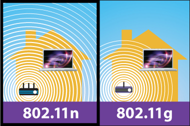

:

Il simbolo Wi-Fi, termine con cui si identificano in genere i dispositivi 802.11 indica l'appartenenza del dispositivo stesso alla Wi-fi Alliance Wi-Fi Alliance: Home, che raccoglie numerosi costruttori di hardware (Cisco, Netgear, Nokia, Intel, Broadcom, Philips, Asus, ecc.). L'organizzazione è nata con l'obiettivo di certificare l'interoperabilità di prodotti 802.11, portando ad una comune (o comunque interoperabile) implementazione di quelle parti dello standard lasciate libere al costruttore. La famiglia 802.11 consta di quattro protocolli dedicati alla trasmissione delle informazioni (a, b, g, n), la sicurezza è stata inclusa in uno standard a parte, 802.11i. Gli altri standard della famiglia (c, d, e, f, h, …) riguardano estensioni dei servizi base e miglioramenti di servizi già disponibili. Il primo protocollo largamente diffuso è stato il b; in seguito si sono diffusi il protocollo a e soprattutto il protocollo g. L'802.11b e 802.11g utilizzano lo spettro di frequenze (banda ISM) nell'intorno dei 2,4 GHz. Si tratta di una banda di frequenze regolarmente assegnata dal piano di ripartizione nazionale (ed internazionale) ad altro servizio, e lasciato di libero impiego solo per le applicazioni che prevedono potenze EIRP (Massima Potenza Equivalente Irradiata da antenna Isotropica) di non più di 20 dBm ed utilizzate all'interno di una proprietà privata (no attraversamento suolo pubblico). Trovandosi così ad operare in bande di frequenze ove già lavorano altri apparecchi, i dispositivi b e g possono essere influenzati da telefoni cordless, ripetitori audio/video per distribuire programmi televisivi satellitari od altri apparecchi all'interno di un appartamento che utilizzano quella banda di frequenze. L'802.11a utilizza la banda ISM dei 5,4 GHz. Tuttavia non risponde alla normativa europea ETSI EN 301 893[1] che prevede DFS (Dynamic Frequency Selection), TPC (Transmit Power Control) e radar meteorologici; tale normativa di armonizzazione europea è valida in Italia su indicazione del Ministero delle Comunicazioni con il decreto ministeriale del 10 gennaio 2005. Per ovviare al problema in Europa è stato introdotto nel 2004 il protocollo 802.11h, che risponde ai requisiti richiesti. Un apparato WiFi per trasmettere su suolo pubblico in Italia a 5.4 GHz deve quindi utilizzare questo standard.
Tabella :
| Standard | Descrizione |
|---|---|
| IEEE 802.11 legacy | La prima versione dello standard 802.11 venne presentata nel 1997 e viene chiamata "802.1y", specificava velocità di trasmissione comprese tra 1 e 2 Mb/s e utilizzava i raggi infrarossi o le onde radio nella frequenza di 2,4 GHz per la trasmissione del segnale. La trasmissione infrarosso venne eliminata dalle versioni successive dato lo scarso successo. La maggior parte dei costruttori infatti non aveva optato per lo standard IrDA, preferendo la trasmissione radio. Il supporto di questo standard per quanto riguarda la trasmissione via infrarossi è incluso delle evoluzioni dello standard 802.11 per ragioni di compatibilità. Poco dopo questo standard vennero realizzati da due produttori indipendenti delle evoluzioni dello standard 802.1y che una volta riunite e migliorate portarono alla definizione dello standard 802.11b. |
| IEEE 802.11a | Nel 2001 venne ratificato il protocollo 802.11a approvato nel 1999. Questo standard utilizza lo spazio di frequenze nell'intorno dei 5 GHz e opera con una velocità massima di 54 Mb/s sebbene nella realtà la velocità reale disponibile all'utente sia di circa 20 Mb/s. La velocità massima può essere ridotta a 48, 36, 24, 18, 9 o 6 se le interferenze elettromagnetiche lo impongono. Lo standard definisce 12 canali non sovrapposti, 8 dedicati alle comunicazioni interne e 4 per le comunicazioni punto a punto. Quasi ogni stato ha emanato una direttiva diversa per regolare le frequenze ma dopo la conferenza mondiale per la radiocomunicazione del 2003 l'autorità federale americana ha deciso di rendere libere secondo i criteri già visti le frequenze utilizzate dallo standard 802.11a. Questo standard non ha riscosso i favori del pubblico dato che l'802.11b si era già molto diffuso e in molti paesi l'uso delle frequenze a 5 GHz è tuttora riservato. In Europa lo standard 802.11a non fu autorizzato all'utilizzo dato che quelle frequenze erano riservate all'HIPERLAN; solo a metà del 2002 tali frequenze vennero liberalizzate e quindi si poté utilizzare l'802.11a. Esistono schede dual standard o tri standard in grado di accettare oltre allo standard a anche il b e per le schede tri standard anche il g. Ovviamente esistono anche degli Access point multi standard. |
| IEEE 802.11b | 802.11b ha visto la sua comparsa ufficiale nel 1999 e ha la capacità di trasmettere al massimo 11 Mbit/s e utilizza il Carrier Sense Multiple Access con Collision Avoidance (CSMA/CA) come metodo di trasmissione delle informazioni. Una buona parte della banda disponibile viene utilizzata dal CSMA/CA. In pratica il massimo trasferimento ottenibile è di 5,9 Mbit/s in TCP e di 7,1 Mbit/s in UDP. Metallo, acqua e in generale ostacoli solidi riducono drasticamente la portata del segnale. Il protocollo utilizza le frequenze nell'intorno dei 2,4 GHz. Utilizzando antenne direzionali esterne dotate di alto guadagno si è in grado di stabilire delle connessioni punto a punto del raggio di molti chilometri [senza fonte]. Utilizzando ricevitori con guadagno di 80 decibel si può arrivare a 8 chilometri o se le condizioni del tempo sono favorevoli anche a distanze maggiori [senza fonte], ma sono situazioni temporanee che non consentono una copertura affidabile nel tempo. Quando il segnale è troppo disturbato o debole lo standard prevede di ridurre la velocità massima a 5,5, 2 o 1 Mb/s per consentire al segnale di essere decodificato correttamente. Sono state sviluppate delle estensioni proprietarie che utilizzando più canali accoppiati consentono di incrementare la velocità di trasmissione a scapito della compatibilità con le periferiche prodotte dagli altri produttori. Queste estensioni normalmente vengono chiamate 802.11b+ e portano la banda teorica a 22, 33 o addirittura a 44 Mb/s. 802.11b e 802.11g dividono lo spettro in 14 sottocanali da 22 MHz ciascuno. I canali sono parzialmente sovrapposti tra loro in frequenza, quindi tra due canali consecutivi esiste una forte interferenza. I due gruppi di canali 1, 6, 11 e 2, 7 e 12 non si sovrappongono fra loro e vengono utilizzati negli ambienti con altre reti wireless. Gli unici canali utilizzabili in tutto il mondo sono il 10 e 11 dato che la Spagna non ha concesso i canali dall'1 al 9 e molte nazioni si limitano ai primi 11 sottocanali. |
| IEEE 802.11f | Anche chiamato Inter Access Point Protocol (IAPP), è un protocollo di livello applicazione per la gestione di ESS (Extented Service Set), ovvero più reti wireless collegate tra di loro, gestendo l'handover di terminali da una rete wireless all'altra. |
| IEEE 802.11g | Questo standard venne ratificato nel giugno del 2003. Utilizza le stesse frequenze dello standard 802.11b cioè la banda di 2,4 GHz e fornisce una velocità teorica di 54 Mb/s che nella realtà si traduce in una velocità netta di 24,7 Mb/s, simile a quella dello standard 802.11a. È totalmente compatibile con lo standard b ma quando si trova a operare con periferiche b deve ovviamente ridurre la sua velocità a quella dello standard b. Prima della ratifica ufficiale dello standard 802.11g avvenuta nell'estate del 2003 vi erano dei produttori indipendenti che fornivano delle apparecchiature basate su specifiche non definitive dello standard. I principali produttori comunque preferirono aderire alle specifiche ufficiali e quando queste vennero pubblicate molti dei loro prodotti furono adeguati al nuovo standard. Alcuni produttori introdussero delle ulteriori varianti chiamate g+ o Super G nei loro prodotti. Queste varianti utilizzavano l'accoppiata di due canali per raddoppiare la banda disponibile anche se questo induceva interferenze con le altre reti e non era supportato da tutte le schede. Il primo grande produttore a rilasciare schede con le specifiche ufficiali 802.11g fu nuovamente Apple che presentò i suoi prodotti "AirPort Extreme". Cisco decise di entrare nel settore acquistando Linksys, e fornì i suoi prodotti con il nome di "Aironet". |
| IEEE 802.11n | Nel gennaio 2004 IEEE ha annunciato di aver avviato lo studio di un nuovo standard per realizzare reti wireless di dimensioni metropolitane. La velocità reale di questo standard dovrebbe essere di 300 Mb/s[2] (quella fisica dovrebbe essere prossima a 52,4 Mb/s), quindi dovrebbe essere 5 volte più rapido del 802.11g e 40 volte più rapido dell'802.11b. Il 19 gennaio 2007 il gruppo di lavoro 802.11 di IEEE ha approvato la Draft 2.0; sulla quale si sono basate le aziende produttrici per rilasciare i loro prodotti della fascia Draft n. Il primo grande produttore a rilasciare prodotti con le specifiche ufficiali 802.11n draft 2.0 fu ancora una volta Apple che presentò i suoi Macbook nella seconda metà del 2006, tutti forniti di serie con dispositivi compliant alla specifica 802.11n, ancora prima della ratifica ufficiale. Nel marzo 2009 il gruppo di lavoro TGn[3] è arrivato al draft 8.0. La versione definitiva dello standard è stata approvata l'11 settembre 2009[4] e la pubblicazione è avvenuta il 29 ottobre 2009. 802.11n include anche la possibilità di utilizzare la tecnologia MIMO (multiple-input multiple-output).[5] Questo consentirà di utilizzare più antenne per trasmettere e più antenne per ricevere incrementando la banda disponibile utilizzando una multiplazione di tipo spaziale attraverso una codifica simile a quella di Alamouti. La specifica 802.11n ha la possibilità di operare sia nell'intorno dei 2.4 GHz sia nell'intorno dei 5 GHz. I prodotti che permettono questa possibilità vengono chiamati "dual band" proprio perché trasmettono nell'intorno dei 2.4 GHz e 5 GHz. |
| IEEE 802.11ac | Avviato da IEEE nel settembre 2008 questo standard dell'802.11 è correntemente in fase di sviluppo (Draft 5.0[6]) ed opera nell'intorno delle frequenze dei 5 GHz. La velocità massima teorica di questo standard all'interno di una WLAN multi-stazione è di 1 Gbit/s con una velocità massima di un singolo collegamento di 500 Mbit/s. Ciò è ottenuto ampliando concetti utilizzati da 802.11n: una più ampia larghezza di banda (fino a 160 MHz), più flussi spaziali MIMO (fino a 8), MIMO multi-utente e modulazione ad alta densità (fino a 256 QAM). |